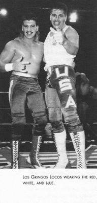
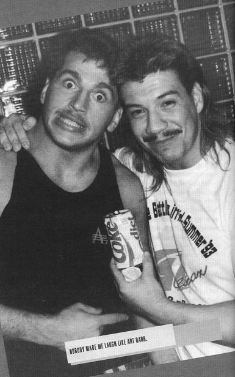

Глава 13
Перевод Александра Суменко для VSplanet.net
Впервые популярность пришла к дивизиону полутяжей в конце 70-х. Татсуми Фуджинами был большой звездой в Японии и даже выигрывал пояс чемпиона в полутяжелом весе World Wide Wrestling Federation в Madison Square Garden.
Маска Тигра был многообещающей звездой в Японии. Даже не звездой, он был всеми любимой иконой культуры.
Сначала Маска Тигра появился в комиксах в качестве супергероя, но в начале 80-х New Japan решила раскручивать дивизион полутяжеловесов и превратила героя комиксов в настоящего рестлера. Многие фанаты рестлинга посчитали это глупейшей идеей, но эта роль досталась Сатору Саяме, и Маска Тигра стал одной из ведущих суперзвезд в истории бизнеса. Сайама был невероятно талантлив и стал настоящим пионером стиля полутяжеловесов — он летал над рингом, обманывал смерть и осуществлял революцию своими харизмой и набором приемов. Обладая невероятно быстрыми ногами и умопомрачительными знаниями боевых искусств, Маска Тигра повлиял на каждого полутяжеловеса, выступавшего после него, от Джушина Лайгера и Великого Саске до Последнего Дракона и Рея Мистерио.
И речь не только о Японии. В Америке Маска Тигра остается единственным рестлером, который одновременно держал пояса чемпионов в полутяжелом весе по версии World Wrestling Federation и National Wrestling Alliance.
Персонаж Маска Тигра оказался настолько феноменальным, что, когда Саяма ушел на пенсию в 1983 году, маску передали Митсухару Мисаве. Он носил маску до 1990 года, когда его сменил Коджи Канемото, который и являлся Маской Тигра, когда я прибыл в New Japan.
Как и у любого героя комиксов, у Маски Тигра был заклятый враг — Черный Тигр. Он как Зеленый Гоблин для Человека-Паука, как Лекс Лютер для Супермена.
Первым Черным Тигром был потрясающий британский рестлер Марк «Роллербол» Рокко. Он собирал большие залы в Англии и немало поработал в Японии перед выходом на пенсию в 1991 году.
Я уже бывал в Японии пару раз, и с каждым разом у меня получалось все лучше. Когда руководство предложило мне стать новым Черным Тигром, я согласился не раздумывая.
Я знал, что моя судьба связана с Японией. Если я собирался сделать карьеру рестлера, это должно было случиться там. Поэтому возможность стать Черным Тигром много для меня значила. Хотя мое лицо было спрятано за маской, я мог получить узнаваемого персонажа, что привлекло бы ко мне больше внимания. И хотя тогда я этого не знал, но предложение стать Черной Маской оказало огромное влияние на мою последующую карьеру.
Я не впервые выступал в маске, но, когда я работал в Мексике как Mascara Magica, мое настоящее имя ни для кого не было секретом. На этот раз маска Черного Тигра позволила мне раскрепоститься, как никогда ранее. Эта маска позволила мне выйти из тени моей семьи. Я уже не был сыном Гори Герреро или младшим братом Эктора, или Мандо, или Чаво — теперь я был Черным Тигром!
Конечно, уровень кейфейба нельзя было назвать грандиозным. Многие люди знали, что под маской Черного Тигра скрывается Эдди Герреро, но я все равно чувствовал больше свободы, чем когда-либо.
Персонаж Черного Тигра освободил меня, как исполнителя. Маска позволяет вам жить той жизнью, которая спрятана глубоко в сердце. Я смог впервые выпустить своего внутреннего хила наружу. И знаете что? Мне это понравилось!
Став Черным Тигром, я выпустил свою злость на свободу. Я мог делать то, чего нельзя фейсам, например, унижать оппонентов или обманывать, чтобы победить. Когда мое лицо скрылось под маской, проявилась моя темная сторона. Оказалось, что я прирожденный хил.
Агрессивность, проявившаяся у Черного Тигра, полностью изменила мой стиль в ринге. Наверное, именно тогда я впервые в жизни был самим собой.
Что еще более важно, я продолжал расти, учиться и развиваться. Я, наконец, понял, что мой отец подразумевал под фразой «генерал в ринге». Я научился по-настоящему вести матч.
Оглядываясь назад, я вижу прямую зависимость между Черным Тигром и моим нынешним персонажем, «Латинской жарой». Став Черной Маской, я впервые нашел себя как исполнитель, открыл уверенность и свирепость, скрывавшуюся во мне.
В Мексике работало немного американцев. Кроме латиноамериканцев, вроде меня, Коннана и Рея Мистерио, там было лишь несколько рестлеров из Северной Америки, среди них были Черный Волшебник (Норман Смайли), Король Хаку, Майк «Тигре Канадиенсе» Лозански и Крис Джерико, выступавший в EMLL как Львиное Сердце. Крис — замечательный человек, внимательный и заботливый. Мы проводили много времени вместе, хотя чаще он играл роль сиделки, присматривая за мной, когда я перебирал с алкоголем.
Гринго должен быть особенным, чтобы добиться успеха там. Как говорит пословица: не суйся со своим уставом в чужой монастырь, но в то же время нужно привнести что-то свое, иначе тебя съедят заживо.
Среди главных звезд AAA был один американец — «Машина любви» Арт Барр.
Арт был потрясающим исполнителем во всех отношениях: одаренный рестлер, способный выполнять сложные трюки, столь любимые мексиканскими фанатами, сочетающий это с харизмой, которая приносит популярность в Штатах. Его дар заключался в умении сделать так, чтобы казалось, что каждое его небольшое действие имеет большое значение. Арт был Риком Флэром в луча-либре — напыщенный, коварный хил, настолько способный развлекать толпу, что зрители его просто обожали.
В личном плане я не мог выносить Арта.
Я считал его заносчивым, самоуверенным и неприятным типом. Он всегда хвастался своим талантом или количеством розданных после шоу автографов. Я видел в Арте амбициозного человека, который, стоит тебе отвернуться, начнет говорить о тебе гадости.
Но, поскольку мы были среди немногих англоговорящих рестлеров, мы часто зависали вместе. Однажды вечером мы ужинали в Монтеррее, и Арт сделал предложение, изменившее мою жизнь.
— Тебе надо быть хилом, — сказал он в перерывах между жеванием. — Давай поговорим с Тони Пенья и скажем ему, что хотим стать командой.
Я был весьма заинтересован. Успех Черного Тигра в Японии усилил мое желание попробовать быть хилом в Мексике. Кроме того, Арт был большой звездой, и для меня было бы выгодно объединиться с ним в команду.
Мы обдумали, как я могу совершить терн и что мы будем делать в качестве хилов. В итоге вдохновляющую идею моего терна подсказал Мандо.
Вооружившись мощным сегментом, который, мы были уверены, отлично сработает, Арт и я пошли к Антонио Пенье. Мы изложили свою идею, и, к нашему удивлению, он немедленно с нами согласился.
Наш план был прост, но гениален. Санто и я выступали против Арта. В мои глаза попал порошок, и, пока я ничего не видел, Арт снял маску с Санто и надел на себя. Он нанес несколько ударов по мне, а потом снова надел маску на Санто. Плохо видя, я решил, что меня ударил Санто, поэтому я напал на него и избил.
А Санто был настолько обожаем, что любой, кто к нему прикасался, мгновенно оказывался по другую сторону баррикад. Зрители засвистели и начали кидать в меня мусор. Их ненависть была невероятной. Я бы не удивился, если бы там начался полноценный мятеж.
С того момента я стал хилом. Когда Арт и я начали работать в команде, нас называли «Американской машиной», что подчеркивало, что именно Арт был главной звездой. Какое-то время нас знали как La Pareja del Terror. А потом на одном из шоу кто-то из комментаторов сказал примерно следующее: «Эти гринго — настоящие loco (сумасшедшие)». Вдруг у нас оказалось подходящее имя — Los Gringos Locos (Сумасшедшие гринго).
Сначала у нас с Артом были проблемы с взаимодействием. Мы хорошо работали в команде, но как люди не сходились. После каждого матча у нас были громкие споры.
Я ненавидел выступать с ним в команде. Я чувствовал себя жалким, работая с парнем, который мне не нравился.
Но если посмотреть на это честно, почему я так к нему относился? Наверное, где-то в глубине сознания я завидовал ему.
Я считал себя лучшим исполнителем из нас двоих. Так почему же люди не любили меня так, как его?
Арт был притягивающим парнем, дружелюбным и общительным. Он был душой компании на ринге и вне его. Какой-то голос внутри меня спрашивал: «Почему я не могу быть, как он?»
Я еще не знал, насколько большое влияние на успех в этом бизнесе оказывает личность. Иногда неважно, насколько хорош рестлер; если говорить об Арте, то я ему и в подметки не годился в отношении харизмы.
В конце концов, мы помирились. Я отдал роль звезды на ринге Арту, но стал лидером команды в раздевалке. Арт щеголял своей харизмой, а я отвечал за психологию.
Я всегда стремился быть лучшим рестлером в плане психологии. Отец учил меня, что психология — ключ ко всему. Она продает историю, которую ты пытаешься рассказать.
Мы с Артом оба верили в старую, добрую психологию в ринге и делали все возможное, чтобы ее продвигать. Фейсы, особенно, главные звезды, не хотели селлить, но мы их заставляли. Обычно это достигалось жесткими и реальными ударами в ринге. Нам пришлось растянуть многих парней, и вскоре все поняли наш посыл: либо вы селлите, либо мы сами выбиваем из вас весь дух.
И наоборот, когда приходил наш черед селлить, мы делали это со всем желанием. Мы уничтожали фейсов, но, когда наступала пора для их возвращения, они воздавали нам должное с избытком. Так мы заработали уважение.
Наши главные оппоненты — Эль Ихо дель Санто и его новый партнер Октагон — следовали за нами по пятам. Все в раздевалке боялись Санто и Октагона из-за их связей с руководством. Санто довольно вспыльчив, и иногда приходится применять силу, чтобы он тебя услышал. «Расслабься, — говорил я. — Я верну тебе должок в конце».

Los Gringos Locos в красно-бело-синей форме
Наконец, они поняли: чем лучше они селлят для нас, тем быстрее обретают популярность. Санто даже сказал как-то:
— Я думал, что работа с вами — это проклятье. Я не представлял, сколько популярности я на этом заработаю.
Постепенно мы сблизились с Артом. Частично это произошло из-за того, что мы много времени проводили вместе. Если я не был с семьей, я был с ним. Если я не был в Японии, я был с ним.
Чем больше я его узнавал, тем больше понимал, кем он был на самом деле. Я увидел настоящего Арта Барра, человека, а не бизнесмена.
И оказалось, что я полностью в нем ошибался. Конечно, он был амбициозен, но у него было огромное сердце. Просто в этом бизнесе приходится быть осторожным и открывать свое сердце только проверенному человеку.
Арт был одним из самых щедрых людей, встречавшихся мне в жизни, и постоянно покупал мне сувениры. Сначала я думал, что за этим скрываются какие-то неясные мотивы. Я не понимал, что он просто был щедрым другом.
Я видел, каким потрясающим отцом он был для своих детей, Декстера и Тиффани. Уезжая в тур, он писал много небольших записочек для Декстера. Потом он прятал их в разных местах, чтобы Декстер каждый день находил послания от отца. Наблюдая за Артом, я учился быть хорошим отцом для своих детей.
От Арта исходило какое-то излучение. Ему удавалось все превращать в шутку. Он любил разыгрывать людей и рассказывать истории. Он был веселым парнем. Это привлекало к нему людей.
Арт смешил меня, как никто другой. Он был прекрасным рассказчиком и всегда преувеличивал правду, чтобы усилить эффект истории. Если бы собака сходила перед Артом в туалет, он бы сказал: «Брат, это была самая большая куча в истории!»
Эта его особенность помогла растопить лед между нами. Он так часто меня смешил, что я не мог не полюбить его.
И вскоре мы уже стали лучшими друзьями. Мы стали братьями.
Очень быстро Арт и я стали неразлучны, даже когда не работали на шоу. Шол подружилась с сыном Арта, Декстером, а Викки очень нравилась подруга Арта, Керри, поэтому нашим семьям было легко проводить время вместе. Однажды мы все отправились в студию Universal, и это было невероятное путешествие. Мне кажется, Арт и я провели время даже лучше, чем наши дети!
Я многому научился у Арта. До нашего знакомства, когда я смотрел на более успешных рестлеров, я думал: «Я могу побороть этих парней в ринге, так почему они зарабатывают больше меня?»
Арт научил меня, что в рестлинге не главное просто быть лучшим в ринге. Главное скрывается в оттенках: демонстрировании своей харизмы, умении передать сюжет с помощью выражения лица.
Именно работая с Артом, я начал раскрываться и пытаться демонстрировать свою харизму. Тогда я был очень стеснительным человеком. Я такой и теперь, но, благодаря Арту, я научился выпускать свою внутреннюю персону на ринге.
Мой отец был невероятно харизматичен, но почему-то он никогда не говорил об этом качестве на тренировках. Он не учил меня, когда и как кричать, какие выражения лица использовать, чтобы продать что-то. Мне приходилось учиться на собственном опыте.
Когда я смотрю свои старые матчи, я удивляюсь, как мало харизмы я демонстрировал тогда. Мое лицо часто почти ничего не выражало. Арт же, с другой стороны, излучал харизму в каждом движении. Обаяние так и сочилось из него. Арт был звездой, как ни крути.
Но Арт был не один, я тоже кое-что привносил в команду, Когда мы начали работать вместе, моим коронным приемом был сплэш со стойки ринга. Его исполнял рестлер Ла Фьера, и я подумал, что это крутой прием. Он был так грациозен, летя в воздухе.
Арт тоже решил использовать сплэш. Он сделал его таким, каким его знают сегодня. Однажды Ту Колд Скорпио сказал Арту: «Чувак, ты похож на лягушку!» Поэтому его и назвали «прыжок лягушки». С тех пор наш командный прием стал комбинацией из моего суперплекса и прыжка лягушки Арта. Это выглядело драматично, и фанатам очень нравилось.
И хотя Арт выглядел лучше меня, именно командное взаимодействие, комбинация наших талантов сделали Los Gringos Locos столь успешными.
Естественно, Арт был обычным человеком. Он не всегда был таким весельчаком, каким казался. Внутри он имел дело со множеством проблем, как и я.
Во время переездов Арт и я жили, как и другие парни: мы не спали ночами, проводя время на вечеринках, днем отправлялись выступать на арену, а потом продолжали веселиться.
Я был любителем пива. Иногда я выпивал крепкие напитки, например, текилу, но пиво осталось моей первой любовью. Многие парни принимали таблетки, но я этого боялся. Я слышал слишком много ужасных историй о том, что случалось с рестлерами. Я не скажу, что мне их никто не предлагал. Обычно это бывало так:
— Да ладно тебе, это же Гальцион.
— Нет, спасибо.
Но вскоре я стал преодолевать свои опасения. Арт подсадил меня на Перкосет и Перкодан, умеренные, но достаточно сильные и вызывающие зависимость болеутоляющие. Признаюсь, я полюбил Перки. Мне нравилось приподнятое ощущение, теплота и удовольствие, получаемые от любого опиата.
Медленно, но верно я избавился от страха и пристрастился к таблеткам. Перки выпускают в упаковках по 12 штук, и я заглатывал пол-упаковки за раз. Вскоре я перешел на Валиум и Гальцион. В конце концов, я начал глотать любое болеутоляющее, которое удавалось найти.
Но одну таблетку я так и не полюбил — очень мощный мышечный релаксант под названием Сома. Их любили рестлеры, но мне никогда не нравилось ощущение, которое оставалось от них. Сому легко раздобыть в Мексике, поэтому я покупал их сотнями, а потом обменивал на болеутоляющие, которые нравились мне.
Как бы мне ни нравились Перки, моим любимым наркотиком оставался алкоголь. Я никогда не работал пьяным, я всегда выпивал только после шоу. Мы возвращались в отель и пили пиво всю ночь в баре или чьем-либо номере. Иногда мы отправлялись в местный стрип-клуб и зависали там.
Я должен заметить, что не все веселились так. Крис Джерико, например, выпивал пару бутылок пива, но не прикасался к таблеткам ни в каком виде. Но для многих рестлеров это был образ жизни, хоть у меня он иногда выходил за грань.
Викки никогда не переживала из-за моих вечеринок. Она понимала, что это входит в часть культуры. Для нее мое увлечение выпивкой было нормальным. Она поняла, что у меня проблема, гораздо позже.
Los Gringos Locos росли не по дням, а по часам. Фанаты обожали ненавидеть нас. Мы обыгрывали тот факт, что Арт был американцем, а я мексиканским американцем. Настоящие мексиканцы ненавидят мексиканских американцев, поэтому, чем больше мы разыгрывали из себя американцев, тем больше ненависти получали от зрителей.
Чем больше мы росли, тем больше рестлеров хотели ассоциироваться с нами. Вскоре Los Gringos Locos выросли в полноценную группировку хилов, D-Generation X версии AAA.
Коннан первым попытался втереться к нам. Это выводило Арта из себя. Он не хотел, чтобы кто-то еще пользовался результатами нашего труда. Он всеми силами старался не впускать Коннана в банду, но я понимал, что не в наших силах ему помешать. Коннан был ведущим рестлером AAA. Его слова были законом. «Слушай, старик, — сказал я Арту, — просто примирись с этим».
Поскольку мы не могли помешать Коннану и Тони Пенье превратить Los Gringos Locos в группировку, мы решили потребовать возможности влиять на ее состав. Мы предложили фантастически одаренного Черного Кота, которого хотели бы иметь в составе банды. Но потом будто прорвало плотину. Все больше рестлеров стремились вскочить на подножку мчащегося поезда: Чикано Пауэр, Эль Мистериозо и Луи Спиколи, который работал под одним из самых ужасных имен в истории рестлинга — «Парень Мадонны».
В конечном счете, это было неважно. Кого бы ни приводили под зонт Los Gringos Locos, центром группировки оставался Арт. Он был главной звездой на любом шоу.
22 июня 1994 года Los Gringos Locos отправились в родной город Арта Портленд, штат Орегон, для участия в совместном шоу AAA и CWUSA, независимой организации, принадлежавшей отцу Арта, Сэнди.
Сэнди Барр был отличным парнем. В свое время он был хорошим рестлером и, даже став промоутером, оставался для рестлеров своим.
Сэнди был в восторге от предстоящего шоу и даже добился появления на нем Тони Хардинг, что было нелегко в те дни. Для моих маленьких читателей — Тоня была фигуристкой и даже выступала на Олимпиаде, но на первые полосы газет она попала из-за заговора с целью вывода из строя своей конкурентки по национальной сборной США — она сломала колено соперницы ломом.
Участие такой «знаменитости» в независимом рестлинг-шоу было большой удачей. Сэнди выложился по полной и потратил кучу денег на рекламу. Он забронировал бейсбольный стадион, полагая, что шоу соберет огромную толпу. Боже, благослови его, он наивно полагал, что люди поедут на северо-запад, чтобы увидеть знаменитость из таблоидов и кучку мексиканских рестлеров.
Тоня Хардинг оказалась очень хорошей, тихой и милой девушкой, совсем не похожей на тот образ машущей ломом маньячки, нарисованный прессой. Естественно, она не имела ни малейшего понятия, кто мы такие. Она просто приехала получить чек, пользуясь остатками своих 15 минут славы.
В мэйн-ивенте сошлись Коннан, Синяя Пантера и Перро Агуайо против меня, Арта и местного независимого рестлера по имени Брузер Брайан Кокс (к сожалению, его уже нет в живых), а нашим «менеджером» была Тоня.
С самого начала матч превратился в фиаско. Согласно правилам Комиссии по боксу и борьбе штата Орегон, Тоня не имела официальной лицензии менеджера и, следовательно, не могла находиться около ринга. Вышли мы вместе, но Тоне пришлось остановиться на полдороги и усесться на раскладном стуле прямо в проходе к рингу.
В этом и заключалась ее роль. Никто не сказал Тоне, что ей делать, а она сама не предпринимала ни малейших попыток как-то поучаствовать в шоу. Арт и я бегали к ней, чтобы «получить инструкции», но даже тогда она не подыгрывала нам, а просто сидела с каменным лицом. Единственным ее вмешательством можно назвать передачу Арту стакана воды, который тот кинул в лицо Перро Агуайо.
Все это выглядело весьма глупо. К несчастью для Сэнди, шоу с треском провалилось. Оказалось, не только Тоня не знала, кто мы такие. Никто в штате Орегон не имел никакого интереса в луча-либре, и стадион был почти пуст.
Мне было жаль Сэнди. Это был один из тех дней, когда все идет наперекосяк. После шоу кто-то украл пару сотен долларов моей зарплаты прямо из раздевалки. Арт и его отец пытались дать мне свои деньги, чтобы возместить ущерб, но я просто не смог взять их. Я знал, что, с финансовой точки зрения, это был для них тяжелый вечер.
С положительной стороны стоит отметить огромное количество отзывов на шоу в прессе, что порадовало Арта. В USA Today опубликовали фотографии с шоу, и, конечно, Арт и Коннан целиком захватили внимание камер. Думаю, часть моей ноги все-таки попала в газету, но не более того. Как обычно, я ничего не имел против. Я знал свое место.
Самый большой фьюд Los Gringos Locos был против главного фейса AAA Эль Ихо дель Санто и его напарника Октагона. Противостояние длилось несколько месяцев и закончилось в матче по правилам «волосы против масок» на AAA When Worlds Collide, первом PPV луча-либре, проводимом и транслируемом в Америке. Мы все понимали, что фьюд исчерпал себя. Настало время решающего матча, а в Мексике нет ничего более крутого, чем матч «волосы против маски».
Изначально планировался одиночный матч между мной и Санто, но Арт неуклонно твердил, что командный матч будет более уместен. Мы рассказали об этом Антонио Пенье, и он согласился.
Арт умел убеждать, поэтому он обычно представлял интересы нашей команды. Что же касается самих матчей, решающее слово оставалось за мной. Я знал цену своей прическе. Если мне придется ее потерять, я собирался заработать на этом каждый возможный цент.
Пока план был на одиночный матч между мной и Санто, Пенья и я договорились о 10 000 долларов за мои волосы. Когда было решено провести командный матч, нам с Артом сказали, что мы получим по 5 000 долларов каждый.
— Нет уж, — сказал я. — Мои волосы стоят 10 000 долларов.
После небольших переговоров Арт и я согласились на компромисс — по 7 500 долларов каждому. Это довольно выгодная сделка, ведь мои волосы снова отрасли через какое-то время.
За пару недель до When Worlds Collide Арт и я отправились в Японию для участия в нескольких шоу New Japan — Арт улетел первым. Он настолько впечатлил руководство, что ему предложили вернуться и отработать сюжет против главной звезды компании Джушина «Грома» Лайгера.
Примерно посреди тура меня разбудил громкий стук в дверь моего номера.
— Сейчас, сейчас! Одну секунду!
Я вылез из кровати и открыл дверь. На пороге стоял Арт без бровей и волос на затылке.
— Брат, что случилось?
— Случились гребаные Нэсти Бойз, — ответил Арт.
Я мгновенно взбесился. Мне плевать на их обычные розыгрыши. То, что они сбрили его волосы, зная о предстоящем ему значительном матче, выходило за пределы розыгрыша. Это было оскорбительно. Это угрожало нашей карьере.
Наверное, они были пьяны, когда сделали это. Никто не может рассуждать здраво после пары стопок. Но в то же время Нэсти Бойз были людьми, которые плевали на всех, кроме себя. Они не уважали нас достаточно, чтобы сдержаться в такой ситуации. Им было плевать, что мы не заработаем денег и не сможем кормить свои семьи. Им было важно лишь провести свой розыгрыш.
Как бы зол я ни был на мерзкий поступок Нэсти Бойз, когда представилась возможность отомстить, я сдержался. Я подставил другую щеку.
Дело было в Японии, и, конечно, мы веселились: я, Черный Кот, Ноббс и другие ребята. Я всегда показывал, что я начеку, когда Нэсти Бойз были рядом. Я пил, но старался не терять контроль над собой. Я всегда следил за своей выпивкой, чтобы мне не подмешали чего-нибудь. Особо помогало присутствие доброго друга, Черного Кота, который прикрывал мою спину.
В какой-то момент Ноббс отключился прямо за столом. Он был без сознания. Мы приподняли его голову и отвесили пару пощечин, чтобы убедиться, что он не реагирует.
Кот посмотрел на меня и сказал:
— Это твой шанс, друг. Давай. Я принесу бритву.
Я вспомнил, как Ноббс раздражал меня все эти годы, как мало уважения он и Сэгз выказывал нам с Артом. Я почти решился, но потом передумал. Что бы мне дало унижение этого человека? «Нет, Кот, — сказал я, — черт с ним».
Хотя я не стал брить Ноббса налысо, я все же испытал чувство мести через некоторое время.
Руководство спонсировало нам участие в нескольких шоу, в Японии это означает, что они позаботились обо всем: отель, еда, напитки — все высшего качества. Нас поселили в красивый пятизвездочный отель на краю горы, нависавшей над океаном. Боже, это было великолепно!
В тот вечер все рестлеры собрались на ужин, и я отведал самую вкусную пищу в своей жизни: стейки, королевские крабы — все, что пожелаешь. Естественно, напитки лились рекой.
Нэсти Бойз, как обычно, налакались. Пока они доходили до кондиции, мы с Котом собрали остатки крабов и раковин с тарелок. Затем смешали все это в своеобразный соус.
— Эй, Брайан, Джерри, — сказал я, — вы это пробовали? Мммм, как вкусно, брат! Попробуйте!
Они стали заглатывать наше блюдо, а мы с Котом едва сдерживали смех. Я с удовольствием скормил этим козлам огромную тарелку дерьма. А они даже не поняли этого!
Впоследствии я рассказывал эту историю некоторым рестлерам, но никогда не получалось рассказать Сэгзу и Ноббсу. Так вот: пацаны, вы ели крабье дерьмо. Надеюсь, вам понравилось это есть так же, как мне понравилось наблюдать за вами!

Арт смешил меня, как никто другой